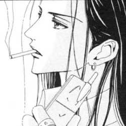
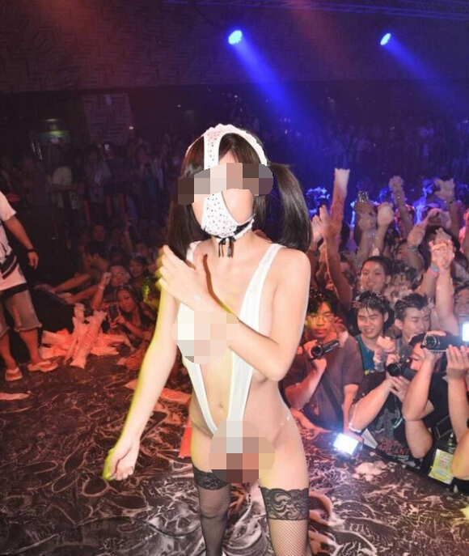

名字:
林路
性别:男

介绍:反驳我也要按照基本法
问题
答案
新建于:2015-08-05 07:42:37 AM，更新于2015-08-08 04:37:02 AM
Pre上一页
Next下一页
跳页:
正文: 
嘛我只是来随便发个图，觉得适宜的人继续适宜，不适宜的继续不适宜就是了，反正谁也说服不了谁。这些努力的coser啊，也真是蛮拼的，为了抹黑咱善良纯真的二次元爱好者群体真是不遗余力。
反正当我认识到这一点时，就已经明白：在我有生之年，必然会因为例如图片上的这种人，而成为别人眼中的傻逼，替他们背锅。
ACGN给我带来无数的乐趣，也因为图片上的这种人，在社会之中我被无故的贴上了跟他们一样的标签，也算是有得有失吧，我并不想对这点发表什么反抗意见了。
努力的coser们，小学生们，你们随意，随意哈！
PS：手机打码太麻烦，等我上电脑再修改答案打码一下，再说了，来漫展这种场合本身就已经表明不在意照片被公开了，严格意义上也没必要打码吧。
————————————————————————————————————
8.8日修改
1 图片打码
2 致歉：
经过评论区指正，此图并不是sox的cos。由于现在sox正在话题上而我的群里有群友发了这一张图，并且没有附任何说明，所以让我想当然的以为这是sox的cos。
回答之前没有经过考证，如果造成歧义跟误会，在此以最诚挚的态度致歉，并且向SOX的粉丝道歉，可能让你们被误会了，对不起。不管SOX目前是否有过如图上这种耻度的cos，但至少这个图片上不是，所以我必须道歉。
并且此条答案我不会删改，权当做引以为戒
，以后在发表言论前要先确定根据正确，不要闹乌龙。
3
以下言论有点偏题，不针对本题提问的SOX相关事件：
我个人深以为虽然这图不是sox的cos，但并不能为如今的cos圈洗白什么。不谈日本，天朝的大大小小漫展出现的耻度coser们已经让我非常坚定原答案的态度：你们就是一群沙比。
不从什么高调低调会不会引人注意，不从会不会引什么广电文化局注意封动漫来谈，单就我个人，从人格上，深深的鄙视着这些耻度coser。
什么叫做爱好，什么叫做宣扬文化，什么叫做哗众取宠跟不要脸，还希望大家能够分清楚。
总结一下：我不是针对sox，我是说耻度coser的各位，全是辣鸡。
以上
Pre上一页
Next下一页
跳页: